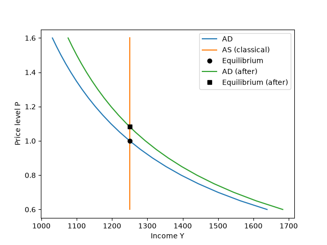
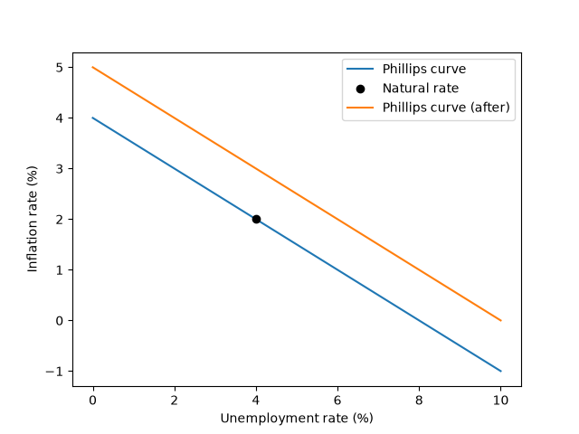

第 14 章: AD-AS 分析と主要理論¶
14.1 この章の地図¶
第 13 章の IS-LM は、物価を一定と考えていました。この章では、物価が動くと、総需要と総供給がどう決まるかを、AD-AS 分析で見ます。そして、物価と失業に関する主要な理論を、小さな関数として実装します。
| 項目 | 内容 |
|---|---|
| 経済学の題材 | 総需要（AD）、総供給（AS、古典派とケインズ）、フィリップス曲線、需給ギャップ、オークンの法則、フィッシャー方程式、貨幣数量説（マインドマップ 5-7） |
| 使う Python の機能 | 関数を引数として渡す（第 5 章の復習）、第 6 章の二分法の再利用、dataclasses.replace |
| 完成形 | aggregate_demand、classical_supply、keynesian_supply、equilibrium_price_and_income、phillips_inflation、output_gap、okun_unemployment、real_interest_rate、price_level_by_quantity_theory |
| ファイル | 実装: lib/chapter14/adas.py、lib/chapter14/indicators.py、lib/chapter14/plot.py（AD-AS・フィリップス曲線の図）／テスト: test/chapter14/test_adas.py、test/chapter14/test_indicators.py、test/chapter14/test_plot.py（自分で書くときは、practice/chapter14/ に、同じ名前で作ります） |
経済学の式とコードの対応¶
| 経済学 | 式 | コード |
|---|---|---|
| 総需要（AD） | 物価 P を決めたときの、IS-LM の均衡の所得。物価が上がると、実質貨幣供給 M ÷ P が減り、LM が左へ動いて、所得が減る | aggregate_demand(model, price_level) |
| 古典派の総供給 | 完全雇用所得で垂直 | classical_supply |
| ケインズの総供給 | 完全雇用の物価までは右上がり、それ以降は垂直 | keynesian_supply |
| フィリップス曲線 | π = π^e − a(u − u_n) | phillips_inflation |
| 需給ギャップ | (実際の GDP − 潜在 GDP) ÷ 潜在 GDP | output_gap |
| オークンの法則 | u = u_n − k × 需給ギャップ | okun_unemployment |
| フィッシャー方程式 | 実質利子率 = 名目利子率 − インフレ率 | real_interest_rate |
| 貨幣数量説 | MV = PY、つまり P = MV ÷ Y | price_level_by_quantity_theory |
記号について: この章の a は、フィリップス曲線の傾きです（第 1 章の需要曲線の切片とは別）。k は、オークンの法則の係数です（第 5 章・第 13 章の k とは別）。P は物価水準、π は物価上昇率、u は失業率、u_n は自然失業率、V は貨幣の流通速度です。一覧は、記号について を参照してください。
14.2 予想する¶
第 13 章の標準のモデル（物価 1 のとき、均衡の所得は 1250）について、次を予想してください。
- 物価が 1 から 1.1 に上がると、総需要（均衡の所得）は、増えますか、減りますか。実質貨幣供給は、525 ÷ 1.1 = 477.3 になります
- 古典派（完全雇用所得 1250 で垂直な総供給）の経済で、政府支出を 20 増やすと、所得と物価は、どうなりますか
- ケインズの総供給が、右上がりの部分にあるとき、同じ政策で、所得と物価は、どうなりますか
答えは、総需要は減ります（右下がりの総需要曲線）。古典派では、所得は 1250 のまま、物価だけが上がります。ケインズの右上がりの部分では、所得も物価も上がります。数値は、テストで確かめます。
14.3 関数を値として扱う¶
総供給は、「物価を受け取り、所得を返す関数」です。第 5 章で、需要と供給の式を関数として引数に渡したのと同じように、総供給の関数を、引数として渡します。
def classical(price: float) -> float:
return classical_supply(price, full_employment_income=1250)
（テストでは、1250 を定数 FULL_EMPLOYMENT_INCOME にしています。）
こう書くと、古典派でもケインズでも、同じ equilibrium_price_and_income(model, supply) で解けます。
14.4 Red → Green → Refactor¶
総需要曲線¶
物価を変えたとき、IS-LM の均衡の所得が、どう変わるかを調べます。
def test_物価が1のとき総需要は第13章の均衡の所得1250() -> None:
assert aggregate_demand(IsLmModel(), price_level=1) == pytest.approx(1250)
def test_物価が上がると実質貨幣供給が減り総需要は減る() -> None:
# 物価 1.1 のとき実質貨幣供給は 525 / 1.1 = 477.27。0.45Y = 300 + 238.64
assert aggregate_demand(IsLmModel(), price_level=1.1) == pytest.approx(
1196.97, abs=0.01
)
def test_総需要曲線は右下がり() -> None:
prices = [0.8, 0.9, 1.0, 1.1, 1.2]
demands = [aggregate_demand(IsLmModel(), p) for p in prices]
assert demands == sorted(demands, reverse=True)
def aggregate_demand(model: IsLmModel, price_level: float) -> float:
"""総需要: 物価水準 P のときの、IS-LM の均衡の所得。
物価が上がると実質貨幣供給 M / P が減り、LM 曲線が左へ動いて、所得が減る。
"""
income, _ = solve_equilibrium(dataclasses.replace(model, price_level=price_level))
return income
第 13 章の solve_equilibrium を、物価だけを変えたモデルで呼ぶだけです。物価ごとの総需要は、次のとおりです。
| 物価 P | 実質貨幣供給 M ÷ P | 総需要（所得） |
|---|---|---|
| 0.8 | 656.25 | 1395.83 |
| 0.9 | 583.33 | 1314.81 |
| 1.0 | 525.00 | 1250.00 |
| 1.1 | 477.27 | 1196.97 |
| 1.2 | 437.50 | 1152.78 |
物価が上がるほど、総需要が減る、右下がりの曲線になります。
総供給曲線¶
古典派は、物価によらず、完全雇用所得で垂直です。ケインズは、完全雇用の物価までは右上がり、それ以降は垂直です。
def test_古典派の総供給は物価によらず完全雇用所得で垂直() -> None:
assert [classical(p) for p in (0.5, 1.0, 2.0)] == [1250, 1250, 1250]
def test_ケインズの総供給は右上がりのあと垂直() -> None:
assert keynesian_recession(0.8) == pytest.approx(1200)
assert keynesian_recession(0.9) == pytest.approx(1250)
assert keynesian_recession(1.0) == pytest.approx(1300)
assert keynesian_recession(1.5) == pytest.approx(1300)
def classical_supply(price: float, full_employment_income: float) -> float:
"""古典派の総供給: 物価によらず、完全雇用所得で垂直。"""
return full_employment_income
def keynesian_supply(
price: float,
full_employment_income: float,
full_employment_price: float,
slope: float,
) -> float:
"""ケインズの総供給: 完全雇用の物価までは右上がり、それ以降は垂直。
物価が 1 下がるごとに、所得が slope だけ減る。
"""
return min(
full_employment_income,
full_employment_income - slope * (full_employment_price - price),
)
min で、2 つの値の小さい方を取ります。物価が完全雇用の物価より高いとき、2 つ目の値は完全雇用所得を超えるので、min で完全雇用所得に抑えられます。これで、「右上がりのあと垂直」の形になります。
均衡の物価と所得¶
総需要と総供給が等しくなる物価を、第 6 章の二分法で求めます。総需要 − 総供給が、物価に対して減少する（総需要は右下がり、総供給は右上がり、または垂直）ので、二分法が使えます。
def equilibrium_price_and_income(
model: IsLmModel,
supply: Callable[[float], float],
low: float = 0.2,
high: float = 5.0,
) -> tuple[float, float]:
"""総需要と総供給が等しくなる物価と所得を、二分法で求める。"""
price = find_equilibrium_price(
lambda p: aggregate_demand(model, p) - supply(p), low, high
)
return price, aggregate_demand(model, price)
第 6 章では、超過需要（価格 → 需要量 − 供給量）に、二分法を使いました。ここでは、「物価 → 総需要 − 総供給」に、同じ関数を使っています。同じアルゴリズムを、別の問題に使い回せました。
古典派: 拡張政策は物価だけを上げる¶
FULL_EMPLOYMENT_INCOME = 1250
def classical(price: float) -> float:
return classical_supply(price, full_employment_income=FULL_EMPLOYMENT_INCOME)
def test_古典派の均衡の所得は完全雇用所得で物価は1() -> None:
price, income = equilibrium_price_and_income(IsLmModel(), classical)
assert price == pytest.approx(1)
assert income == pytest.approx(1250)
def test_古典派では拡張的な財政政策は物価だけを上げる() -> None:
expanded = IsLmModel(government=120)
price, income = equilibrium_price_and_income(expanded, classical)
assert income == pytest.approx(FULL_EMPLOYMENT_INCOME)
assert price > 1
def test_古典派では拡張的な金融政策も物価だけを上げる() -> None:
expanded = IsLmModel(money_supply=575)
price, income = equilibrium_price_and_income(expanded, classical)
# 貨幣供給が 575 / 525 倍になれば、物価も同じ倍率で上がる
assert income == pytest.approx(FULL_EMPLOYMENT_INCOME)
assert price == pytest.approx(575 / 525)
| 古典派（完全雇用所得 1250） | 物価 | 所得 |
|---|---|---|
| 標準のモデル | 1.0000 | 1250 |
| 政府支出 +20 | 1.0825 | 1250 |
| 貨幣供給 +50（525 → 575） | 1.0952（= 575 ÷ 525） | 1250 |
所得は変わらず、物価だけが上がります。これが、マインドマップの「古典派: 拡張政策は物価だけ上げる」です。貨幣供給を増やしたときの物価の上昇率が、貨幣供給の増加率（575 ÷ 525）と同じになるのは、後で見る貨幣数量説と同じ関係です。
古典派の、拡張政策の効果を、図にします。

図の読み方:
- 横軸が所得 Y、縦軸が物価水準 P です。青い線が総需要（AD）です。物価が上がると、実質貨幣供給 M ÷ P が減って、所得が減るので、右下がりです
- オレンジの縦線が、古典派の総供給です。物価によらず、完全雇用の所得（1250）で垂直です
- 交点（黒い丸）が、均衡で、物価 1.0、所得 1250 です
- 政府支出を 20 増やすと、総需要曲線が右にずれます（緑）。新しい均衡（黒い四角）は、供給の縦線の上を動き、所得は 1250 のまま、物価だけが 1.0825 に上がります
この図は、lib/chapter14/plot.py の plot_adas が描きます。
ケインズ: 右上がりの部分と垂直の部分¶
完全雇用所得が 1300 で、現在の経済が 1250 の近くにある（需要不足の）状況を考えます。物価が 1 下がるごとに、所得が 500 減る総供給です。
def keynesian_recession(price: float) -> float:
# 完全雇用所得 1300、完全雇用の物価 1.0、物価が 1 下がるごとに所得は 500 減る
return keynesian_supply(
price, full_employment_income=1300, full_employment_price=1.0, slope=500
)
def test_ケインズの右上がりの部分では所得も物価も上がる() -> None:
base_price, base_income = equilibrium_price_and_income(
IsLmModel(), keynesian_recession
)
expanded = dataclasses.replace(IsLmModel(), government=120)
price, income = equilibrium_price_and_income(expanded, keynesian_recession)
assert base_income < 1300
assert income > base_income
assert price > base_price
def test_ケインズの垂直の部分では物価だけが上がる() -> None:
expanded = dataclasses.replace(IsLmModel(), government=300)
price, income = equilibrium_price_and_income(expanded, keynesian_recession)
assert income == pytest.approx(1300)
assert price > 1
def test_均衡では総需要と総供給が等しい() -> None:
supply: Callable[[float], float] = keynesian_recession
price, income = equilibrium_price_and_income(IsLmModel(), supply)
assert aggregate_demand(IsLmModel(), price) == pytest.approx(income)
assert supply(price) == pytest.approx(income)
| ケインズの総供給（完全雇用所得 1300） | 物価 | 所得 |
|---|---|---|
| 標準のモデル | 0.9550 | 1277.49 |
| 政府支出 +20 | 0.9949 | 1297.44 |
| 政府支出 +200（G = 300） | 3.0882 | 1300.00 |
総供給の右上がりの部分では、政府支出を増やすと、所得も物価も上がります（1277.49 → 1297.44、0.9550 → 0.9949）。完全雇用所得 1300 に達すると、さらに増やしても、所得は 1300 のままで、物価だけが上がります（G = 300 のとき、物価は 3.09）。
フィリップス曲線・需給ギャップ・オークンの法則¶
物価と失業に関する関係は、どれも、1 行の式です。
@pytest.mark.parametrize(
("unemployment", "expected"),
[(3, 2.5), (4, 2.0), (5, 1.5)],
)
def test_フィリップス曲線は失業率が低いほど物価上昇率が高い(
unemployment: float, expected: float
) -> None:
result = phillips_inflation(
unemployment, natural_rate=4, expected_inflation=2, slope=0.5
)
assert result == pytest.approx(expected)
def test_自然失業率では物価上昇率は期待物価上昇率に等しい() -> None:
result = phillips_inflation(4, natural_rate=4, expected_inflation=3, slope=0.5)
assert result == pytest.approx(3)
def test_需給ギャップは実際のGDPと潜在GDPの差の割合() -> None:
assert output_gap(actual=1200, potential=1250) == pytest.approx(-4)
assert output_gap(actual=1300, potential=1250) == pytest.approx(4)
def test_オークンの法則では需給ギャップが負だと失業率が自然失業率を上回る() -> None:
# ギャップ -4%、係数 0.5 なら、失業率は自然失業率 4% より 2% 高い
assert okun_unemployment(-4, natural_rate=4, coefficient=0.5) == pytest.approx(6)
assert okun_unemployment(4, natural_rate=4, coefficient=0.5) == pytest.approx(2)
def phillips_inflation(
unemployment: float,
natural_rate: float,
expected_inflation: float,
slope: float,
) -> float:
"""フィリップス曲線。
物価上昇率 = 期待物価上昇率 - slope × (失業率 - 自然失業率)。
"""
return expected_inflation - slope * (unemployment - natural_rate)
def output_gap(actual: float, potential: float) -> float:
"""需給ギャップ（%）= (実際の GDP - 潜在 GDP) ÷ 潜在 GDP × 100。"""
if potential <= 0:
raise ValueError("潜在 GDP は正でなければならない")
return (actual - potential) / potential * 100
def okun_unemployment(
gap: float, natural_rate: float, coefficient: float = 0.5
) -> float:
"""オークンの法則: 失業率 = 自然失業率 - 係数 × 需給ギャップ。"""
return natural_rate - coefficient * gap
自然失業率 4%、期待物価上昇率 2%、傾き 0.5 のとき、失業率が 3% なら物価上昇率は 2.5%、4% なら 2.0%（期待と同じ）、5% なら 1.5% です。短期のフィリップス曲線は右下がりで、失業率が自然失業率に等しいとき、物価上昇率は期待物価上昇率に等しい（長期は垂直）、というマインドマップの内容が、数値で見えます。
需給ギャップは、実際の所得 1200、潜在所得（完全雇用所得）1250 のとき −4%（需要不足）です。オークンの法則で、失業率は 4 + 0.5 × 4 = 6% と推定されます。
フィリップス曲線を、図にします。自然失業率 4%、期待物価上昇率 2%、傾き a = 0.5 の場合です。

図の読み方:
- 青い線が、π = 2 − 0.5 × (u − 4) です。失業率が高いほど、物価上昇率が低い、右下がりの関係です
- 自然失業率の点（黒い丸、失業率 4%）では、物価上昇率が、期待物価上昇率（2%）に等しくなります
- 期待物価上昇率が 3% に上がると、曲線全体が、1 だけ上にずれます（オレンジ）。同じ失業率でも、物価上昇率が高くなります
失業率と物価上昇率の関係は、期待が変わると、変わります。この図は、lib/chapter14/plot.py の plot_phillips_curve が描きます。
フィッシャー方程式と貨幣数量説¶
def test_実質利子率は名目利子率からインフレ率を引いた値() -> None:
assert real_interest_rate(nominal=3, inflation=1) == pytest.approx(2)
def test_デフレでは名目利子率が0でも実質利子率はプラス() -> None:
assert real_interest_rate(nominal=0, inflation=-2) == pytest.approx(2)
def test_貨幣量が2倍なら物価も2倍() -> None:
# MV = PY: 525 × 2 ÷ 1050 = 1、1050 × 2 ÷ 1050 = 2
base = price_level_by_quantity_theory(525, velocity=2, real_income=1050)
doubled = price_level_by_quantity_theory(1050, velocity=2, real_income=1050)
assert base == pytest.approx(1)
assert doubled == pytest.approx(2 * base)
def real_interest_rate(nominal: float, inflation: float) -> float:
"""フィッシャー方程式: 実質利子率 = 名目利子率 - インフレ率。"""
return nominal - inflation
def price_level_by_quantity_theory(
money_supply: float, velocity: float, real_income: float
) -> float:
"""貨幣数量説（交換方程式 MV = PY）から、物価水準 P = MV ÷ Y を求める。"""
if real_income <= 0:
raise ValueError("実質所得は正でなければならない")
return money_supply * velocity / real_income
デフレ（インフレ率 −2%）のとき、名目利子率が 0% でも、実質利子率は +2% です。名目利子率には、下限（0% 近辺）があるので、デフレだと、実質利子率が下げられません。これが、マインドマップの「デフレの影響: 実質利子率の上昇」です。第 13 章の流動性のわなと、つながっています。
貨幣数量説では、貨幣量が 2 倍（525 → 1050）になると、実質所得と貨幣の流通速度が変わらなければ、物価も 2 倍（1 → 2）になります。
実行結果¶
cd apps/economics-programming/python
uv run pytest test/chapter14
30 passed
14.5 規則で言うと¶
- 既に作ったモデルから、別の分析の部品を導く。 総需要は、IS-LM の均衡を、物価ごとに求めたもの。新しい式を書かずに、第 13 章の関数を再利用する
- 形の違うものは、関数の違いで表し、引数として渡す。 古典派とケインズの総供給は、別の関数にして、同じ均衡の関数に渡す
- 1 行の式の理論は、式を名前の付いた関数にして、境界の値をテストする。 自然失業率では物価上昇率が期待と同じ、のような性質を、テストで残す
混同しやすい点を、表にまとめます。
| 混同しやすい点 | 違い |
|---|---|
| 総需要曲線が右下がりの理由 | 物価が上がると、実質貨幣供給が減り、利子率が上がって、投資と所得が減る（IS-LM の LM の移動）。「物価が上がると買えなくなる」という個別の財の理由とは、違う |
| 古典派とケインズの政策効果 | 古典派は、所得は供給（完全雇用所得）で決まり、拡張政策は物価だけを上げる。ケインズの右上がりの部分では、所得も増える |
| フィリップス曲線の短期と長期 | 短期は右下がり（貨幣錯覚）。長期は、自然失業率で垂直 |
| 名目利子率と実質利子率 | 実質 = 名目 − インフレ率。デフレだと、実質は名目より高い |
このモデルが成り立たない場面¶
ここで作った総供給曲線は、形を決めて、数値を与えたものです。労働市場から導いたわけではありません（マインドマップの「労働市場から導出」は、この章の範囲外です）。また、フィリップス曲線は、期待物価上昇率を、一定と考えています。人々が、物価上昇を織り込むと、曲線自体が動きます。貨幣数量説は、貨幣の流通速度 V が一定の前提です。金融の仕組みが変わると、V は変わります。
14.6 練習問題¶
| 種類 | 問題 |
|---|---|
| 想起 | 本文を閉じて、aggregate_demand と keynesian_supply を自分で書いてください |
| 生成 | 解説を見る前に、「貨幣供給を 525 から 1050 に 2 倍にしたとき、古典派の均衡の物価が、いくつになるか」を予想して、テストを書いてください |
| 多様 | ケインズの総供給の傾き（slope）を 500 から 1000 に変えて、政府支出 +20 の効果を比べてください（slope は、物価が 1 下がるごとに減る所得です。縦軸が物価の図では、slope が大きいほど総供給の曲線は、緩やかに見えます） |
| 交互 | 第 13 章の流動性のわな（interest_floor=2、money_supply=2000）で、総需要曲線がどうなるかを調べてください |
解答（先に自分で取り組んでから、開いてください）
想起: 本文と見比べて、aggregate_demand が dataclasses.replace で物価だけを変えているか、keynesian_supply が min で完全雇用所得に抑えているかを確かめます。
生成: 古典派では、所得は 1250 で決まり、総需要が 1250 になるには、実質貨幣供給 M ÷ P が 525 でなければなりません。M = 1050 なら、P = 2 です。
def test_貨幣供給が2倍なら古典派の均衡の物価も2倍() -> None:
price, income = equilibrium_price_and_income(
IsLmModel(money_supply=1050), classical
)
assert price == pytest.approx(2)
assert income == pytest.approx(1250)
貨幣数量説（MV = PY）と同じ関係です。貨幣量が 2 倍になると、物価も 2 倍になります。
多様: 政府支出 100 → 120 の効果です。
| 傾き | 均衡（政策前） | 均衡（政策後） | 所得の増加 | 物価の上昇 |
|---|---|---|---|---|
| 500 | 物価 0.9550、所得 1277.49 | 物価 0.9949、所得 1297.44 | +19.95 | +0.0399 |
| 1000 | 物価 0.9688、所得 1268.79 | 物価 0.9965、所得 1296.50 | +27.70 | +0.0277 |
傾きが大きいほど、同じ需要の増加が、物価の上昇より、所得の増加になりやすくなります。傾きが大きい総供給は、物価が少し上がるだけで、所得が大きく増える（供給が、物価の変化に敏感に反応する）ためです。
交互:
trap = IsLmModel(interest_floor=2, money_supply=2000)
[aggregate_demand(trap, p) for p in (0.5, 0.8, 1.0, 1.2, 1.5, 2.0)]
| 物価 | 0.5 | 0.8 | 1.0 | 1.2 | 1.5 | 2.0 |
|---|---|---|---|---|---|---|
| 総需要（流動性のわな） | 1400 | 1400 | 1400 | 1400 | 1400 | 1400 |
| 総需要（標準のモデル） | 1833.3 | 1395.8 | 1250.0 | 1152.8 | 1055.6 | 958.3 |
標準のモデルでは、物価が下がるほど、総需要が増えます。流動性のわなでは、利子率が下限の 2 に張り付いていて、物価が下がっても（実質貨幣供給が増えても）、利子率が下がらないので、総需要は 1400 のまま動かず、総需要曲線が垂直になります。
14.7 振り返り¶
- 古典派とケインズで、政策の効果が違う理由を、自分の言葉で説明できますか
- 二分法を、別の問題に使い回せたことで、何が楽になりましたか
- 1 行の式の理論は、テストにどんな価値があると思いますか
14.8 まとめ¶
- IS-LM から総需要曲線を導き、古典派・ケインズの総供給曲線と組み合わせて、均衡の物価と所得を求めた
- 古典派（拡張政策は物価だけを上げる）とケインズ（右上がりでは所得も増え、垂直では物価だけ上がる）の違いを、数値で確かめた
- フィリップス曲線、需給ギャップ、オークンの法則、フィッシャー方程式、貨幣数量説を、テスト付きの関数にした
次の章では、市場の失敗を扱い、独占と寡占（ナッシュ均衡）を実装します。